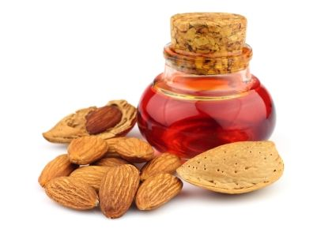
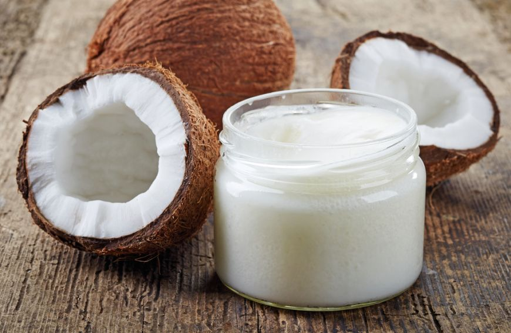
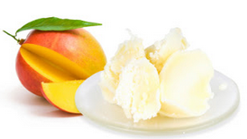
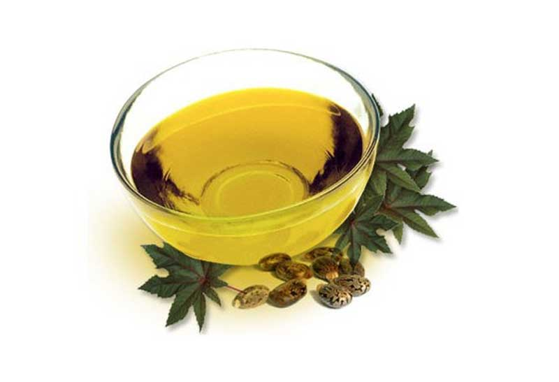
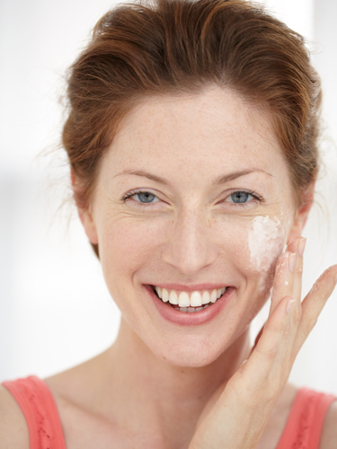

Sta acum in puterea ta sa aduci luxul si confortul chiar la tine acasa, sa-ti creezi un spa la tine in sala de baie. Tot ce trebuie sa faci este sa -ti alegi produse cu ingrediente delicioase si texturi fine: geluri si creme p>de dus, spuma si saruri de baie, precum si creme intens hidratante pentruingrijire speciala. Parfumurile trebuie sa fie calmante si cu efect relaxant. |
|  | Uleiul de migdale: este unul dintre cele mai populare uleiuri vegetale, utilizat in special in produsele pentru protectia pielii. Este bogat in acizi oleic si linoleic, acizi grasi esentiali pentru organism, vitaminele D si E, minerale (Ca, Mg), aminoacizi. Uleiul este deosebit de eficient pentru pielea uscata, dar si pentru regenerarea parului. |
Vanilia: este o esenta extrasa dintr-o specie de orhidee. Industria frumusetii foloseste vanilia pentru parfumul ei suav.
Pe langa aroma sa deosebita vanilia are si proprietati antiseptice, stimulatoare si afrodisiace.
Uleiul din seminte de floarea pasiunii: este obtinut prin presare din semintele florii pasiunii, care
are un fruct cu un parfum special. Uleiul obtinut este bogat in acizi grasi esentiali, cu efect protector
si nutritiv asupra pielii.
Untul de Murumuru: este extras din fructele de Astrocaryum Murumuru, un tip de palmier originar din padurea tropicala amazoniana. Acest unt este deosebit de emolient, hidrateaza, catifeleaza si hraneste pielea. Este recomandat in special pentru pielea uscata |
 |
|  | Untul de mango: este obtinut din semintele fructelor cu acelasi nume. Acest unt onctuos are proprietati emoliente, fiind excelent pentru a trata pielea uscata si a-i reda catifelarea. Uleiul de Babassu este realizat prin presare la rece din arborele Babassu din Brazilia. Uleiul de Babassu hidra-teaza delicat, fara sa lase pielea grasa sau lipicioasa. |
Uleiul de masline: este folosit cu succes in cosmetica, poate la fel de des precum in industria alimentara. Este bogat in fitonutrienti, vitaminele A, B1, B2, C, D, E, K, acizi grasi omega-3 si omega-6. Uleiul de masline hraneste, hidrateaza si tonifica pielea, intareste unghiile si da stralucire parului. |
 |
Untul de Cupuaçu: este un ingredient onctuos obtinut din fructele de Theobroma Grandiflorum, un arbore inrudit cu
arborele de cacao. Untul are excelente proprietati de hidratare a pielii si de protectie a barierei naturale exercitate
de aceasta. Mentine pielea catifelata si elastica.
Untul de Murumuru: este extras din fructele de Astrocaryum Murumuru, un tip de palmier originar din padurea tropicala
amazoniana. Acest unt este deosebit de emolient, hidrateaza, catifeleaza si hraneste pielea. Este recomandat in special
pentru pielea uscata.
Uleiul de nuca braziliana: este obtinut din nucile arborelui tropical Bertholletia Excelsa si este un ulei galben deschis cu
un miros dulceag. Este un emolient excelent, hidrateaza si catifeleaza pielea.
|  | Uleiul de Babassu: este realizat prin presare la rece din arborele Babassu din Brazilia. Uleiul de Babassu hidra-teaza delicat, fara sa lase pielea grasa sau lipicioasa. Florile de portocal amar: sunt folosite in industria cosmetica si in parfumerie sub forma unor uleiuri florale. Uleiul din flori de portocal este deosebit de eficient in compozitia unor creme pentru tenul matur sau cuperozic, avand proprietati emoliente si tonice. |